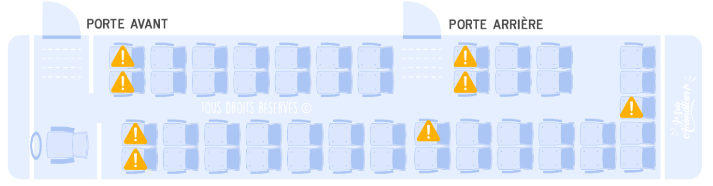

1. Accueil
- Exemple de planning d'organisation d'une semaine appro
- Saynète
- Objectifs
- Préparation
- Sensibilisation
- Aménagement
- Accueil
- Déroulement
- Rythme
- Animation
- Sécurité / Urgence
- Animation
- Fin
- Rangement
- Analyse
3. Travail personnels
- GA1/GA2 : Grand Jeu 1 & 2
- PPA : Projet Personnel d'Animation
BOUTTON VOIRE DES IDEES DE SAYNETES
4. Ados/Préados
5. Transports
- Brainstorming : À quoi pensez-vous en entendant « transport » ? (Bus, car, train, avion, vomi, ceinture...)
- À l’arrivée du car, vérifier l’état général (vitres, carrosserie, etc.). En cas de problème, prévenir le
conducteur. La sécurité des enfants (et des animateurs !) est une priorité, votre responsabilité pénale est
engagée. Vérifier aussi la présence de la trousse de secours et du gilet jaune au besoin. Regarder également
l'état de santé du chauffeur, s'il est fatigué, ou ivre, il ne doit évidemment pas conduire -> refuser de faire
monter les enfants.
- Organisation des bagages : qui met les valises dans le car ? Les jeunes ou les animateurs ? -> En fonction de
tranche d'âge.
- Les enfants cherchent souvent la meilleure place et rangent leurs valises sans attention. Leur rappeler de
faire attention ou laisser les animateurs s’en charger.
- Le chauffeur peut demander la liste des jeunes et le nombre d’enfants/animateurs présents.
- Que prennent les jeunes dans le bus ? Boissons, nourriture ? À adapter selon la durée du trajet. Pour une
sortie piscine, rien à prendre ; pour un long trajet, prévoir eau et pique-nique si un arrêt est prévu.
- Placement dans le car : où s’installent les animateurs ? -> Doivent être répartis dans le car ! Éviter pour
les jeunes le centre au fond, près des portes et les places sans fauteuils devant :ce sont des places
déconseillé mais pas interdit. Strapontins par contre interdits.

- L’animateur au fond du bus remonte l’ensemble du groupe. Idéalement, les animateurs sont répartis partout.
- Avant de partir, vérifier que tout le monde a bien attaché sa ceinture de sécurité. C’est obligatoire et
fondamental.
- En cas de mal des transports, placer les jeunes sujets à ce problème à l’avant et prévoir des sacs
plastiques à garder sur sois !
- Attention à la hauteur de la marche lors de la montée et descente, surtout pour les enfants de moins de 10 ans.
Toujours placer un animateur pour compter les enfants à la montée et à la descente.
- Toilettes dans le bus : les chauffeurs préfèrent souvent qu’on ne les utilise pas. Prévoir un passage aux
toilettes avant le départ.
- Attention à la hauteur de la soute, les enfants peuvent se cogner.
- Organisation de la soute : selon la configuration du car, adapter la disposition des animateurs. Parfois les
soutes communiquent, parfois non. Pour les petits, placer les valises à l’avant de la soute.
- Caler les bagages pour éviter qu’ils ne basculent en cas de freinage brusque.
- Des valises bien alignées donnent une bonne image du séjour. Des valises mal rangées donnent une mauvaise
impression. (Cela fait parties des vitrines du séjour !)
- À l’approche de l’arrivée, réveiller les animateurs qui dorment.
- Avant de descendre, faire un point avec les animateurs et donner les consignes aux jeunes, car une fois dehors
ils courent vers leurs parents.
- À l’arrivée, placer un animateur pour compter les enfants à la descente, un autre pour sortir les valises
(surtout pour les petits), et un autre pour surveiller ceux qui partent et les noter.
- En fin de trajet, faire un tour du bus pour vérifier qu’aucune affaire ou enfant n’a été oublié. Dans les bus
modernes, une alarme signale si un enfant est resté à bord.
- Compter systématiquement les enfants en montant et en descendant du bus.
🎓 Formation BAFA